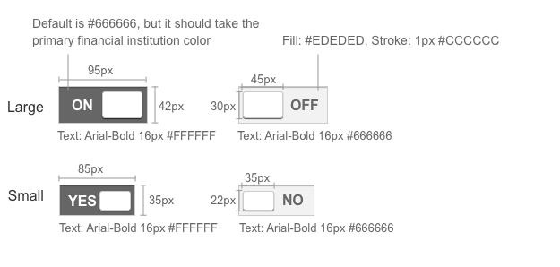

Toggle
There are two sizes for toggles: small and large. The use of each depends on the size constraints of the page.
Toggles are used for an option that the user can turn on or off. For example, Yes/No or On/Off.
The selected color for the toggle when turned “ON” is the financial institution’s primary accent color, if this color information is not available then the default color is #666666.
Use the default browser focus state.
